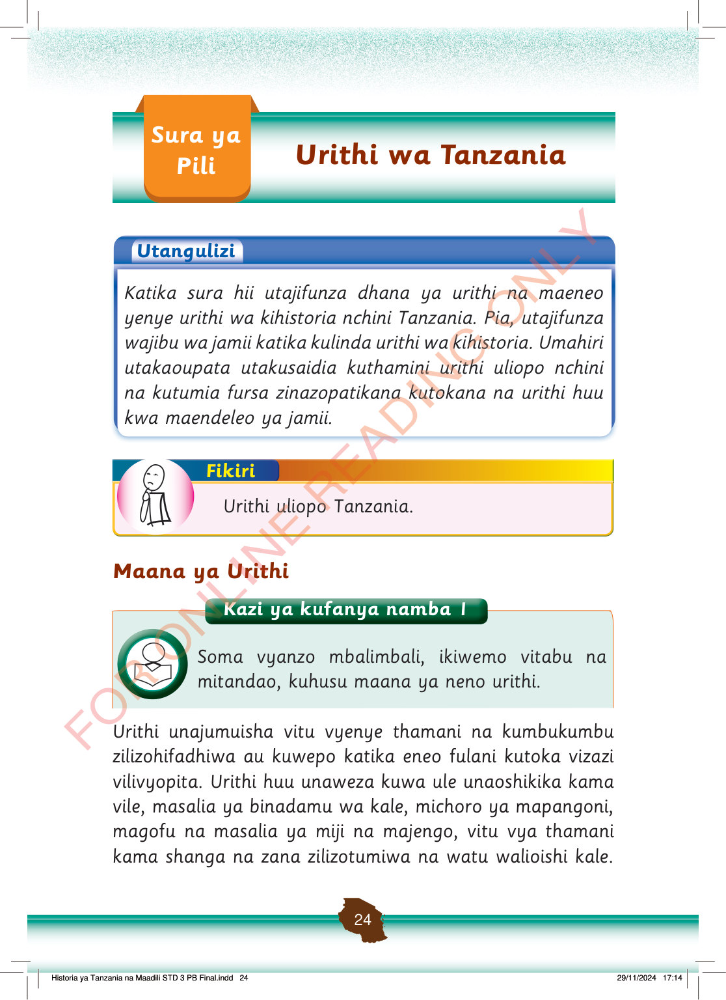

Sura ya Pili: Urithi wa Tanzania.
Urithi wa Tanzania
Utangulizi
Katika sura hii utajifunza dhana ya urithi na maeneo yenye urithi wa kihistoria nchini Tanzania.
Pia, utajifunza wajibu wa jamii katika kulinda urithi wa kihistoria.
Umahiri utakaoupata utakusaidia kuthamini urithi uliopo nchini na kutumia fursa zinazopatikana kutokana na urithi huu kwa maendeleo ya jamii.
Fikiri
Urithi uliopo Tanzania.
Maana ya Urithi
Kazi ya kufanya namba 1
Soma vyanzo mbalimbali, ikiwemo vitabu na mitandao, kuhusu maana ya neno urithi.
Urithi unajumuisha vitu vyenye thamani na kumbukumbu zilizohifadhiwa au kuwepo katika eneo fulani kutoka vizazi vilivyopita.
Urithi huu unaweza kuwa ule unaoshikika kama vile, masalia ya binadamu wa kale, michoro ya mapangoni, magofu na masalia ya miji na majengo, vitu vya thamani kama shanga na zana zilizotumiwa na watu walioishi kale.
Historia ya Tanzania na Maadili STD 3 PB Final.indd 24
29/11/2024 17:14